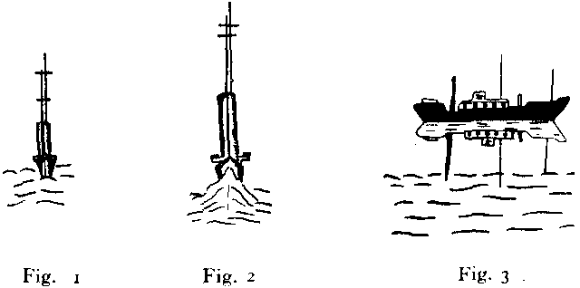
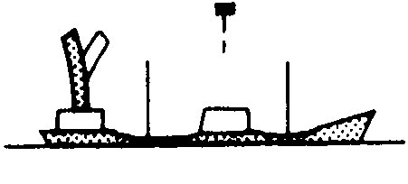
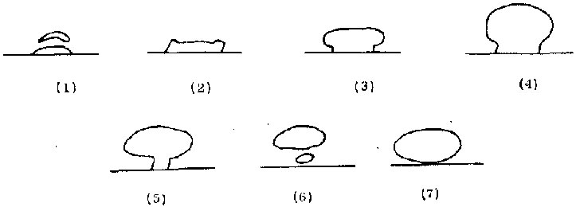
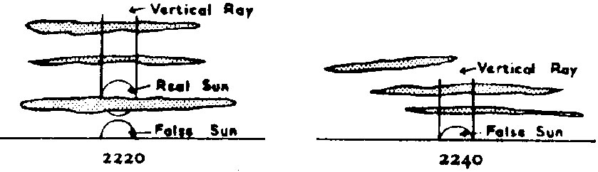

Il a été reconnu qu'une réfraction systématique de la lumière d'une source unique peut déboucher sur des images de mirage multiples dont les forms peuvent être compliquées. Les premières observations de Vince (1798) et Scoresby (1820) incluent des observations d'images complètement ou partiellement inversées d'un navire distant unique. Depuis une position sur la côte de la Manche, John Parnell (1869) observa 5 images élevées, toutes en ligne verticale, d'un phare situé sur la côte française. Les 5 images avaient toutes des formes différentes. Lors de leurs observations en Espagne, Biot et Arago (1809) observèrent jusqu'à 4 images élevées d'un signal lumineux distant (161 km). Les images disparûrent et réaparûrent par intermittence et par moments se joignirent pour former une colonne de lumière verticale étroite qui se sépara par la suite en 2 parties, la partie inférieure apparaissant rouge et la partie supérieure apparaissant verte. Les observations ci-dessus resulted from abnormal atmospheric light-refraction the observed images were distant, and in most cases detailed descriptions were made with the aid of binoculars.
Practically all theoretical and experimental investigations of optical mirages (e.g., Wollaston 1800; Hillers 1914; R. W. Wood 1911) have been concerned with demonstrating the number and shape of observed images. Tait's theoretical treatise and Wollaston's laboratory experiment can be considered classical examples. Tait's terrestrial-refraction model represents a horizontally stratified atmosphere, and a vertically finite refracting layer with a continuous change in refractive index. Under these assumptions the paths of light rays are represented by the solution to the differential equation:
where n can be expressed as a continuous function of height (z). Tait shows that the number and
shape of mirage images depend on the detailed structure of the refractive-index profile (temperature profile)
within the refracting layer. For example, the elevated mirage image of a distant object becomes inverted when
the refractive index in the upper part of the refracting layer decreases more rapidly with height than in the
lower part. This "classical" explanation of image inversion is illustrated in Fig. 8. Shown are the paths of two
light rays obtained from solving Eq. (3) for
Apparent vertical stretching (elongation, towering) of a luminous object due to refraction is illustrated in Fig.
9. For the sake of clarity, height and elevation angles are exaggerated. A horizontal refracting layer is assumed
that is 10 meters thick and through which the refractive index (n) decreases with height (z) from
1.00029 to 1.00026 according to the relation
Many examples of image inversion, vertical stretching, and shrinking due to abnormal atmospheric refraction are given in The Marine Observateur.
Tait's theoretical approach, the emphasis on the refractive-index profile, is basic to many other theoretical investigations of the mirage. For example, Wilhelm Hillers (1913) shows how two refracted images of a single light source can be formed when the profile in the refracting layer is such that the refracted rays are circular. Fig. 10 shows the geometry of this special case. The refracting layer lies above the observer and the distant light source. Refraction below the refracting layer is assumed negligible, i.e., light rays are rectilinear. When the light rays penetrating the refracting layer are circles concentric about M, two separate rays emanating from the light source reach the observer's eye and all rays intermediate and outside these two fail to be tangent to a concentric circle. Consequently, the observer views two separate images. An example of three observed images of a distant hill is shown in the figure on page 1026 dans un extrait de The Marine Observer.
Océan Atlantique Nord |
|
S.S. Bristol City. Capitaine A. L. Webb, O.B.E. Sydney (C.B.) to Swansea. Observers, the Master and Mr. R. Whitman, 3rd Officier.
Le 18 septembre 1952 à 20 h 00 (GMT). Un vaisseau approchant end-on à 15 miles, avec hull just visible, appeared to have elongated masts and funnel (Fig. 1). At 10 miles the hull also became enlarged and the bow wave, very prominent (Fig. 2), appeared to move up and down the length of the stem. At 5 miles the vessel resumed normal shape. At the same time and position a second vessel, when 10 miles to the s'ward, suddenly developed an inverted image which lasted for 15 min. before disappearing (Fig 3.).
A few minutes later the wake appeared, very prominent, resembling heavy surf which lasted another 10 min. (Fig. 4). Before passing out of view the vessel appeared to take on a "block" shape (Fig. 5), only resuming its normal shape at brief intervals as the vessel dipped in the slight swell. Sea Temp. 53 °F, air Temp. 52 °, wet bulb 50 °. Calm sea, slight swell.
Position du navire : 48°32' Nord, 44°50' Ouest.
Note : Cette observation is also one of superior mirage et en Fig. 3 l'image inversée est clairement visible. Dans les Figs. 1 et 2 l'extension verticale et la distortion known as looming is well marked.
(Reproduit de The Marine Observer, Vol. 23, No. 161, p. 143, Juillet 1953)
Océan Atlantique Sud |
|
S.S. Tenagodus. Capitaine W. Broughton. Cape Town to Algiers. Observers, Mr. J. J. Diston, Chief Officier, and Mr. J. F. Gristwood, 2nd Officier.
2nd Mars, 1955, 1730-1800 L.T. About one hour after leaving Cape Town abnormal refraction was noticed around the horizon from SW. through N. to E. A large tanker, 8 miles distant on the port beam, was considerably distorted; the funnel was greatly elongated and appeared taller then the masts, and swayed occasionally. The radar scanner appeared suspended well above the ship. On the starboard bow, 28 miles distant, a hill 280 ft high at Ysterfontein Point was observed to have an inverted image; these gradually telescoped until the hill appeared as a block.
Températures : air 66 °F, mer 59 °. Slight sea, low swell.
Position du navire : 33°49' Sud, 18°16' Est.
(Reproduit de The Marine Observer, vol 26, n° 172, avril 1956)
Tait's approach cannot be applied indiscriminately to all mirage phenomena because integration of Eq. (3) is restricted to a selected range of refractive index profiles. Furthermore, the effect of the earth's curvature is excluded so that only mirage phenomena associated with not-too-distant objects can be considered. Hence, Tait's model cannot explain mirage observations associated with extraterrestrial sources such as the sun or the moon.
Alfred Wegener (1918) has developed an atmospheric refraction model that explains distorted images of the sun, moon, planets, or stars that are often observed near the horizon. Wegener assumes a spherically stratified atmosphere and reduces the refracting layer to a refracting boundary or surface of total reflection. Wegener demonstrated that when the refracting boundary lies above the observer and the sun is on the horizon, the boundary refracts the solar light rays in such a way that the observer views two separate images of the solar disc, a flattened upper image and a distorted lower image. Fig. 11 shows the successive form of the two images for a setting sun or moon in the presence of a 7° temperature-inversion layer 50 m above the observer [Apparent typo in the original text, "observed" for "observer." ] as computed by Wegener. The degree of deflection of the incoming light rays and consequently the degree of distortion of the solar disc depends on the refractive-index change or temperature change across the reflecting boundary. When the temperature change is small, only a single distorted image of the solar disc appears. When the change across the boundary is very large only the the flat upper part of the "split" solar image is seen, so that the setting sun appears to vanish above the horizon. When the atmosphere is highly stratified, i.e., when several horizontal refracting boundaries are present, the setting sun can appear like a Chinese Pagoda or like a stack of discs. The refracted images of the setting sun computed by Wegener's model agree closely with those photographed and described by D. J. K. O'Connell (1958) in connection with a study of the green and red flash phenomena.
Wegener's model is not restricted to luminous sources outside the earth's atmosphere. It can be applied to distant terrestrial objects such as mountains from which emitted light rays are at grazing incidence to the top of the refracting boundary. Wegener's model of atmospheric refraction illustrates the characteristics that are basic to many spectacular risings or settings of sun, moon, or planet. Following are three accounts of such abnormal atmospheric-refraction phenomena as given in The Marine Observer.
The atmospheric-refraction models of Tait and Wegener quantitatively explain the basic characteristics of the most commonly observed mirage-images. Other theoretical investigations are available that discuss various special aspects. For example, the theory of the superior mirage by Odd Haug explains the appearance of up to four images from a single source. Wilhelm Hillers treats the special case of a lateral mirage, i.e., the refraction of light when the refractive-index gradient is horizontal, as Mai be the case along a wall heated by solar radiation. Koji Ilidaka and Gustav Forster discuss the theory of refraction when the surfaces of constant density in the atmosphere are somewhere between horizontal and vertical. Together, these theoretical models explain adequately the varying ways in which a mirage image can appear to an observer. Currently, there is no single model with a numerical solution to all aspects of the mirage.
Réfraction anormale - Au large des côtes du Portugal |
|
M/V. Australind. Capitaine J. F. Wood. Port Said to Bremen. Observateur, Mr. D. Ewan, Chief Officier.
27 Avril, 1950, 15 h 46-15 h 49 (GMT). Les dessins accompagnants dépeignent la séquence de formes supposée par le Soleil en résultat d'une réfraction.
Après clearing the horizon le Soleil reprit lentement ses proportions normales et à une altitude de 1½ ° aucune réfraction n'était apparente. Aucune terre n'était visible près du phénomène. Vent Nord, force 4. Baromètre 1020,3 mb, température de l'air 58 °F. Ciel sans nuages.
Position du navire : Latitude 38° 04' Nord, Longitude 9° 24' Ouest.
(Reproduit de The Marine Observer, vol. 21, n° 152, p. 80, avril 1951)
Réfraction anormale - Océan Atlantique Nord |
|
O.W.S. Weather Recorder. Capitaine A. W. Ford, à station météo de l'Océan A. Observateur, M. J. Ballantyne, 3? Officier.
5 mai 1955, 22 h 20-22 h 40 (GMT). Vers le coucher du Soleil une réfraction anormale fut observée, et pendant un moment 2 soleils furent visibles. Un faux soleil fut vu pour la moitié de son diamètre sur l'horizon, et touchant le vrai Soleil au-dessus. Le vrai Soleil était partiellement masqué par un nuage. Le faux soleil persista pendant 3 ou 4 mn après que le vrai Soleil se soit couché. Un rayon vertical avec une coloration rougeâtre s'étendit jusqu'à 4 ° environ au-dessus du vrai Soleil.
(Reproduit de The Marine Observer, Vol. 26, No. 172, Avril 1956)
M. V. Timaru Star. Capitaine H. W. McNeil. Londre à Curacao. Observateur, M. N. Johnson, 3? Officier.
4 janvier 1956. En descendant la Manche à 08 h 00 (GMT), peu après le lever du Soleil, le Soleil fut observé ayant une apparence déformée (dessin 1). A 08 h 10 alors que le Soleil continuait à se lever un faux "soleil" commença à se coucher. 2 mn plus tard il y avait un écart distinct entre le vrai Soleil et le faux et à 08 h 14 le faux soleil n'était plus visible. Dans la zone du vrai soleil montant le ciel était clair et de couleur orange brillant. Un phénomène semblable au dessin 2 fut observé au coucher du Soleil le même jour.
Position du navire : 50° 05' Nord, 02° 04' Ouest.
(Reproduit de The Marine Observer, vol. 27, n° 175, p. 13, 1957)